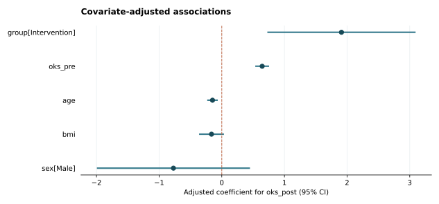

MEDCOHORTKIT · REPRODUCIBLE RESEARCH
SYNTHETIC EXAMPLE — independent patient cohort
Local, auditable cohort statistics. Tables report their denominators; models report their uncertainty method. "Significant" does not by itself establish clinical importance or causality.
160Observation rows / 观测记录
160Unique subjects / 独立编号数
0Additional rows per subject / 重复记录
v0.1.0Analysis package / 工具版本
01 · Cohort description / 基线描述
| variable | level | overall | Group 1: Control | Group 2: Intervention | missing_overall | missing_group_1 | missing_group_2 |
|---|---|---|---|---|---|---|---|
| N (rows) | 160 | 77 | 83 | 0 | 0 | 0 | |
| age | mean (SD) | 64.44 (6.59); n=160 | 64.26 (6.68); n=77 | 64.60 (6.55); n=83 | 0 | 0 | 0 |
| age | median [Q1, Q3] | 64.56 [60.12, 68.59]; n=160 | 64.34 [59.53, 67.84]; n=77 | 64.59 [61.13, 68.95]; n=83 | 0 | 0 | 0 |
| bmi | mean (SD) | 26.17 (2.88); n=158 | 25.83 (2.86); n=77 | 26.50 (2.88); n=81 | 2 | 0 | 2 |
| bmi | median [Q1, Q3] | 26.20 [24.17, 27.97]; n=158 | 26.04 [23.91, 27.42]; n=77 | 26.29 [24.26, 28.40]; n=81 | 2 | 0 | 2 |
| oks_pre | mean (SD) | 24.49 (6.24); n=160 | 24.03 (6.29); n=77 | 24.93 (6.20); n=83 | 0 | 0 | 0 |
| oks_pre | median [Q1, Q3] | 24.21 [20.16, 28.87]; n=160 | 23.22 [19.75, 26.58]; n=77 | 25.19 [20.55, 29.84]; n=83 | 0 | 0 | 0 |
| oks_post | mean (SD) | 31.77 (5.45); n=159 | 30.48 (5.59); n=76 | 32.95 (5.07); n=83 | 1 | 1 | 0 |
| oks_post | median [Q1, Q3] | 31.37 [28.51, 34.67]; n=159 | 29.81 [26.48, 33.60]; n=76 | 32.36 [29.66, 35.25]; n=83 | 1 | 1 | 0 |
| sex | Female | 85/159 (53.5%) | 36/76 (47.4%) | 49/83 (59.0%) | 1 | 1 | 0 |
| sex | Male | 74/159 (46.5%) | 40/76 (52.6%) | 34/83 (41.0%) | 1 | 1 | 0 |
- Counts describe rows, not necessarily independent patients.
- Continuous summaries use variable-wise nonmissing observations; SD is the sample SD (ddof=1).
- Categorical cells are count/nonmissing denominator (percentage). Missing values are shown separately.
- This descriptive table contains no hypothesis tests. Group order is recorded in group_labels.
02 · Prespecified comparisons / 组间比较
| variable | kind | group_1 | group_2 | n1 | n2 | test | estimate | ci_low | ci_high | p_value | p_adjusted | notes |
|---|---|---|---|---|---|---|---|---|---|---|---|---|
| age | continuous | Control | Intervention | 77 | 83 | Welch t-test (two-sided) | 0.3423 | -1.7251 | 2.4098 | 0.7441 | 0.7441 | Estimate is mean(group_2) - mean(group_1); unadjusted 95% Welch CI. Missing excluded by variable: group_1=0, group_2=0. |
| bmi | continuous | Control | Intervention | 77 | 81 | Welch t-test (two-sided) | 0.6751 | -0.2268 | 1.5770 | 0.1413 | 0.2578 | Estimate is mean(group_2) - mean(group_1); unadjusted 95% Welch CI. Missing excluded by variable: group_1=0, group_2=2. |
| oks_pre | continuous | Control | Intervention | 77 | 83 | Welch t-test (two-sided) | 0.8984 | -1.0541 | 2.8508 | 0.3648 | 0.4560 | Estimate is mean(group_2) - mean(group_1); unadjusted 95% Welch CI. Missing excluded by variable: group_1=0, group_2=0. |
| oks_post | continuous | Control | Intervention | 76 | 83 | Welch t-test (two-sided) | 2.4753 | 0.7981 | 4.1525 | 0.0041 | 0.0204 | Estimate is mean(group_2) - mean(group_1); unadjusted 95% Welch CI. Missing excluded by variable: group_1=1, group_2=0. |
| sex | categorical | Control | Intervention | 76 | 83 | Fisher exact (two-sided) | 0.6264 | 0.3177 | 1.2262 | 0.1547 | 0.2578 | Conditional odds ratio for group_2 versus group_1; event='Male', reference category='Female'; unadjusted 95% exact conditional CI. Category ordering is natural sort (mixed types use type/name sort); read the event label before interpreting. Missing excluded by variable: group_1=1, group_2=0. |
- Independent observations are required; independence cannot be established without design information.
- Subject IDs were checked for uniqueness.
- Missing values are excluded separately for each variable; missingness can bias inference.
- Multiplicity adjustment: fdr_bh across the 5 finite p-values in this call.
- Benjamini-Hochberg requires independent or suitably positively dependent tests; Benjamini-Yekutieli allows arbitrary dependence.
- All tests are two-sided. Confidence intervals are 95% and are not multiplicity-adjusted.
03 · Adjusted linear model / 多元线性回归
HC3 covariance · 156 complete observations · 4 omitted · inference df = 150
Reference categories: {'group': 'Control', 'sex': 'Female'}

| term | estimate | std_error | ci_low | ci_high | p_value |
|---|---|---|---|---|---|
| Intercept | 29.2200 | 3.9530 | 21.4093 | 37.0307 | 9.439e-12 |
| group[Intervention] | 1.9103 | 0.5987 | 0.7273 | 3.0933 | 0.0017 |
| oks_pre | 0.6448 | 0.0559 | 0.5344 | 0.7552 | 1.856e-22 |
| age | -0.1481 | 0.0426 | -0.2323 | -0.0638 | 0.0007 |
| bmi | -0.1640 | 0.1003 | -0.3622 | 0.0343 | 0.1043 |
| sex[Male] | -0.7717 | 0.6184 | -1.9935 | 0.4501 | 0.2140 |
- Complete-case analysis; missing data were not imputed.
- Coefficients describe associations. Covariance correction does not resolve confounding or model misspecification.
- Inspect linearity, influential observations, and residuals before scientific interpretation.
04 · Measurement reliability / 测量一致性
| type | icc | ci_low | ci_high | n_subjects | n_raters |
|---|---|---|---|---|---|
| ICC(A,1) | 0.9679 | 0.9562 | 0.9759 | 159 | 2 |
| ICC(A,k) | 0.9837 | 0.9776 | 0.9878 | 159 | 2 |
- Absolute-agreement ANOVA point estimators equivalent to ICC(2,1) and ICC(2,k).
- 95% percentile bootstrap resamples complete subject rows with replacement, holding raters fixed.
- Intervals are conditional on the observed raters, not analytic F-based intervals for random-rater generalization.
- Listwise deletion of incomplete ratings; no imputation.
- Subjects must be independent. Single and average-measure ICC answer different reliability questions.
Reproducibility / 可复现记录
Input SHA-256: e2470677f1630719162bc03beb7e309945b77f673b9dab014cb0175b1f0f1eb5
The full configuration, dependency versions, analysis choices, and numerical results are in audit.json.
- This report contains aggregate research results; review it before sharing.
- Missingness is reported per analysis. Complete-case analysis can be biased when missingness is informative.
- No normality test, p-value threshold, or automatic covariate selection determines the analysis method.